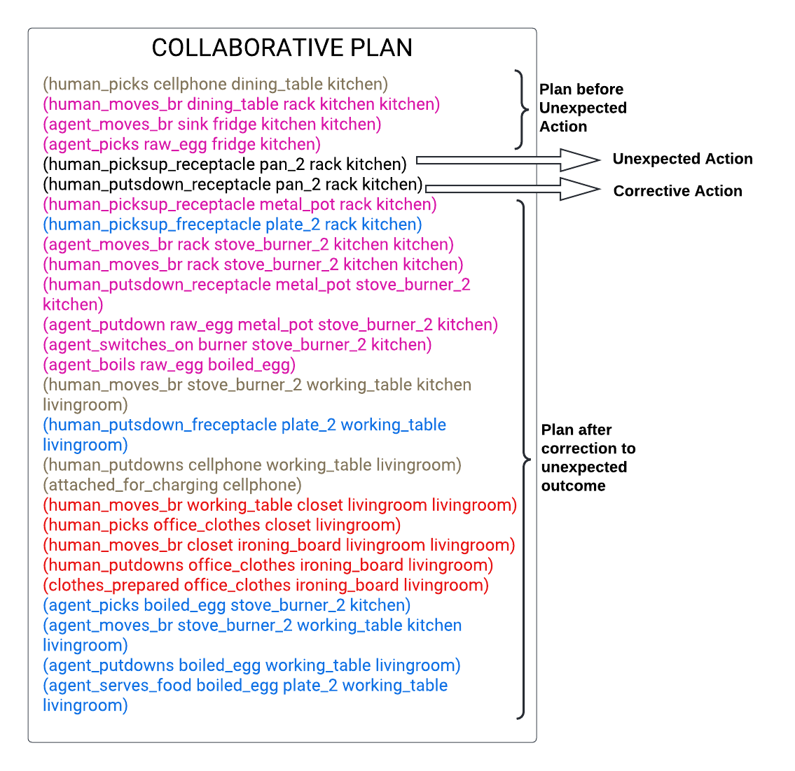

Video
Below is the PDDL problem file goal:
(goal:
(and
(boiled boiled_egg)
(food_served boiled_egg plate_2
dining_table kitchen)
(prepared_clothes office_clothes
ironing_board livingroom)
(charged cellphone)
)
) An agent assisting humans in daily living activities can collaborate more effectively by anticipating upcoming tasks. Data-driven methods represent the state of the art in task anticipation, planning, and related problems, but these methods are resource-hungry and opaque. Our prior work introduced a proof of concept framework that used an LLM to anticipate 3 high-level tasks that served as goals for a classical planning system that computed a sequence of low-level actions for the agent to achieve these goals. This paper describes DaTAPlan, our framework that significantly extends our prior work toward human-robot collaboration. Specifically, DaTAPlan's planner computes actions for an agent and a human to collaboratively and jointly achieve the tasks anticipated by the LLM, and the agent automatically adapts to unexpected changes in human action outcomes and preferences. We evaluate DaTAPlan's capabilities in a realistic simulation environment, demonstrating accurate task anticipation, effective human-robot collaboration, and the ability to adapt to unexpected changes.
Our Framework consists of four parts:
Below is the PDDL problem file goal:
(goal:
(and
(boiled boiled_egg)
(food_served boiled_egg plate_2
dining_table kitchen)
(prepared_clothes office_clothes
ironing_board livingroom)
(charged cellphone)
)
)

@misc{singh2024anticipate,
title={Anticipate & Collab: Data-driven Task Anticipation and Knowledge-driven Planning for Human-robot Collaboration},
author={Shivam Singh and Karthik Swaminathan and Raghav Arora and Ramandeep Singh and Ahana Datta and Dipanjan Das and Snehasis Banerjee and Mohan Sridharan and Madhava Krishna},
year={2024},
eprint={2404.03587},
archivePrefix={arXiv},
primaryClass={cs.RO}
}